全文翻译
摘要
扩散模型能够生成高质量图像，但需要进行数十次前向传播。我们引入了分布匹配蒸馏（DMD）方法，该方法可将扩散模型转换为单步图像生成器，且对图像质量的影响微乎其微。我们通过最小化近似KL散度来强制单步图像生成器在分布层面与扩散模型匹配，其梯度可表示为两个分数函数的差值，一个是目标分布的分数函数，另一个是我们单步生成器所产生的合成分布的分数函数。这些分数函数被参数化为两个分别在各自分布上训练的扩散模型。结合匹配多步扩散输出大规模结构的简单回归损失，我们的方法优于所有已发表的少步扩散方法，在ImageNet 64×64上达到2.62的FID，在零样本COCO-30k上达到11.49的FID，可与Stable Diffusion相媲美，但速度要快几个数量级。利用FP16推理，我们的模型在现代硬件上能够以20 FPS的速度生成图像。
1. 引言
扩散模型[21, 61, 63, 64, 71, 74]彻底革新了图像生成领域，通过稳定的训练流程实现了前所未有的真实感和多样性。然而，与生成对抗网络（GANs）[15]和变分自编码器（VAEs）[34]不同，其采样过程是一个缓慢的迭代过程，通过渐进去噪将高斯噪声样本转换为复杂图像[21, 74]。这通常需要数十到数百次昂贵的神经网络评估，限制了生成管道作为创意工具的交互性。
为了加速采样速度，先前的方法[42, 43, 47, 48, 51, 65, 75, 91, 92]将原始多步扩散采样发现的噪声到图像映射蒸馏到单通学生网络中。然而，拟合如此高维、复杂的映射无疑是一项艰巨的任务。一个挑战是运行完整的去噪轨迹的成本非常高，仅仅为了实现学生模型的一次损失计算。最近的方法通过逐步增加学生的采样距离来缓解这一问题，而无需运行原始扩散的完整去噪序列[3, 16, 42, 43, 51, 65, 75]。然而，蒸馏模型的性能仍然落后于原始多步扩散模型。
相比之下，我们不是强制噪声和扩散生成的图像之间的对应关系，而是简单地强制学生生成的图像与原始扩散模型难以区分。从高层次上讲，我们的目标与其他分布匹配生成模型（如GMMN[39]或GANs[15]）有共同的动机。尽管它们在创建逼真图像方面取得了令人印象深刻的成功[27, 30]，但在通用文本到图像数据上扩展模型一直具有挑战性[26, 62, 88]。在这项工作中，我们绕过了这个问题，从一个已经在大规模文本到图像数据上训练的扩散模型开始。具体来说，我们微调预训练的扩散模型，使其不仅学习数据分布，还学习我们的蒸馏生成器正在产生的假分布。由于已知扩散模型可以近似扩散分布的分数函数[23, 73]，我们可以将去噪扩散输出解释为使图像“更真实”的梯度方向，或者如果扩散模型是在假图像上学习的，则是“更假”的梯度方向。最后，生成器的梯度更新规则被设计为两者的差值，将合成图像推向更高的真实感和更低的虚假感。先前的工作[80]在一种称为变分分数蒸馏的方法中表明，使用预训练的扩散模型对真实和假分布进行建模，对于3D对象的测试时优化也很有效。我们的见解是，类似的方法可以转而训练一个完整的生成模型。
此外，我们发现预计算适度数量的多步扩散采样结果，并对我们的单步生成强制执行简单的回归损失，在存在分布匹配损失的情况下可作为有效的正则化器。而且，回归损失确保我们的单步生成器与教师模型对齐（见图6），展示了实时设计预览的潜力。我们的方法借鉴了VSD[80]、GANs[15]和pix2pix[24]的灵感和见解，表明通过（1）使用扩散模型对真实和假分布进行建模，以及（2）使用简单的回归损失来匹配多步扩散输出，我们可以训练出高保真度的单步生成模型。
我们在各种任务上评估了使用我们的分布匹配蒸馏程序（DMD）训练的模型，包括CIFAR-10[36]和ImageNet 64×64[8]上的图像生成，以及MS COCO 512×512[40]上的零样本文本到图像生成。在所有基准测试中，我们的单步生成器显著优于所有已发表的少步扩散方法，如渐进蒸馏[51, 65]、整流流[42, 43]和一致性模型[48, 75]。在ImageNet上，DMD达到2.62的FID，比一致性模型[75]提高了2.4倍。使用与Stable Diffusion[63]相同的去噪器架构，DMD在MS-COCO 2014 30k上实现了11.49的竞争性FID。我们的定量和定性评估表明，我们的模型生成的图像质量与昂贵的Stable Diffusion模型生成的图像质量非常相似。重要的是，我们的方法在保持这种图像保真度水平的同时，将神经网络评估减少了100倍。这种效率使DMD在利用FP16推理时能够以20 FPS的速率生成512×512图像，为交互式应用开辟了广泛的可能性。
2. 相关工作
2.1 扩散模型
扩散模型[2, 21, 71, 74]已成为强大的生成建模框架，在图像生成[61, 63, 64]、音频合成[6, 35]和视频生成[11, 22, 70]等多个领域取得了空前成功。这些模型通过反向扩散过程[72, 74]将噪声逐步转换为连贯结构。尽管取得了最先进的结果，但扩散模型固有的迭代过程对实时应用而言计算成本高昂。我们的工作基于领先的扩散模型[31, 63]，并引入了简单的蒸馏流程，将多步生成过程简化为单次前向传播。该方法普遍适用于任何具有确定性采样的扩散模型[31, 72, 74]。
2.2 扩散加速
加速扩散模型的推理过程一直是该领域的研究重点，形成了两类方法。第一类是快速扩散采样器[31, 41, 45, 46, 91]，可将预训练扩散模型的采样步数从数千步大幅减少到仅20-50步，但进一步减少步数往往会导致性能急剧下降。另一类是扩散蒸馏[3, 16, 42, 47, 51, 65, 75, 83, 92]，其将扩散蒸馏视为知识蒸馏[19]，即训练学生模型将原始扩散模型的多步输出蒸馏为单步。Luhman等人[47]和DSNO[93]提出了一种简单方法：预计算去噪轨迹，并在像素空间中通过回归损失训练学生模型。然而，每次损失函数计算都需要运行完整的去噪轨迹，成本极高。为解决这一问题，渐进蒸馏（PD）[51, 65]训练一系列学生模型，将前一个模型的采样步数减半；InstaFlow[42, 43]逐步学习更“直”的流，使单步预测在更大距离上保持准确性；一致性蒸馏（CD）[75]、TRACT[3]和BOOT[16]训练学生模型，使其在ODE流的不同时间步输出一致。相比之下，我们的研究表明，一旦引入分布匹配作为训练目标，Luhman等人和DSNO的预计算扩散输出的简单方法已足够有效。
2.3 分布匹配
最近，几类生成模型通过恢复被预定义机制（如噪声注入[21, 61, 64]或token掩码[5, 60, 87]）破坏的样本，在复杂数据集上实现了规模化应用。另一方面，也存在不依赖样本重建作为训练目标的生成方法，而是在分布层面匹配合成样本与目标样本，如GMMD[10, 39]或GANs[15]。其中，GANs在真实感方面展现出前所未有的质量[4, 26-28, 30, 67]，尤其是当GAN损失与特定任务的辅助回归损失结合时，可缓解训练不稳定性，应用范围从配对图像翻译[24, 54, 79, 90]到非配对图像编辑[37, 55, 95]。然而，GANs在文本引导合成中较少被采用，因为需要精心的架构设计以确保大规模训练的稳定性[26]。
最近，一些工作[1, 12, 82, 86]建立了基于分数的模型与分布匹配之间的联系。特别是ProlificDreamer[80]引入了变分分数蒸馏（VSD），利用预训练的文本到图像扩散模型作为分布匹配损失。由于VSD可在非配对设置中利用大型预训练模型[17, 58]，其在基于粒子优化的文本条件3D合成中取得了令人印象深刻的结果。我们的方法对VSD进行了改进和扩展，用于训练深度生成神经网络以蒸馏扩散模型。此外，受GANs在图像翻译中的成功启发，我们通过回归损失补充了训练的稳定性。结果表明，我们的方法在LAION[69]等复杂数据集上成功实现了高真实感生成。我们的方法不同于最近将GANs与扩散结合的工作[68, 81, 83, 84]，因为我们的公式不基于GANs。我们的方法与同期工作[50, 85]有共同动机，即利用VSD目标训练生成器，但不同之处在于我们通过引入回归损失专门针对扩散蒸馏，并在文本到图像任务中展示了最先进的结果。
3. 分布匹配蒸馏
| 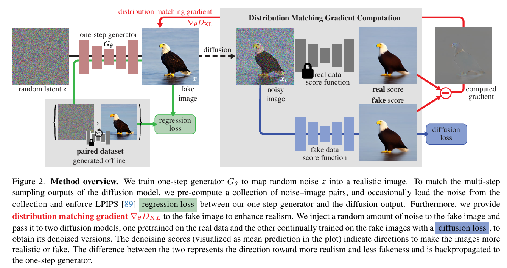 |
|---|
| 图2. 方法概述。我们训练一步生成器$G_{\theta}$将随机噪声z映射到逼真的图像。为了匹配扩散模型的多步采样输出，我们预先计算了一组噪声-图像对，并偶尔从该集合中加载噪声，强制我们的一步生成器与扩散输出之间存在LPIPS回归损失。此外，我们向假图像提供分布匹配梯度$\nabla_{\theta} D_{KL}$以增强真实感。我们向假图像注入随机量的噪声，并将其传递给两个扩散模型，一个在真实数据上预训练，另一个通过扩散损失在假图像上持续训练，以获得其去噪版本。去噪分数（在图中显示为平均预测）指示了使图像更真实或更假的方向。两者之间的差异代表了更真实和更少假的方向，并反向传播到一步生成器。 |
3.1 预训练基础模型与单步生成器
我们的蒸馏流程假设已有一个预训练的扩散去噪器（基础模型）$\mu_{base}$。扩散模型的训练目标是逆转高斯扩散过程——该过程将真实数据分布$x_0 \sim p_{real}$中的样本逐步添加噪声，在$T$个时间步内转化为白噪声$x_T \sim \mathcal{N}(0, I)$ [21, 71, 74]；此处我们设$T=1000$。扩散模型表示为$\mu_{base}(x_t, t)$，从高斯样本$x_T$出发，模型基于时间步$t \in \{0, 1, …, T-1\}$（或噪声水平）对当前噪声估计$x_t$迭代去噪，生成目标数据分布的样本。扩散模型通常需要10到100步才能生成逼真图像。为简化推导，我们使用扩散的均值预测形式[31]，但通过变量替换[33]，该方法与ϵ预测形式[21, 63]等价（见附录H）。我们的实现采用了EDM[31]和Stable Diffusion[63]的预训练模型。
单步生成器：我们的单步生成器$G_\theta$采用基础扩散去噪器的架构，但不含时间条件。训练前，我们用基础模型初始化其参数$\theta$，即$G_\theta(z) = \mu_{base}(z, T-1)$，$\forall z$。
3.2 分布匹配损失
理想情况下，我们希望快速生成器的输出样本与真实图像无法区分。受ProlificDreamer[80]启发，我们最小化真实图像分布$p_{real}$与虚假图像分布$p_{fake}$之间的Kullback-Leibler（KL）散度：
计算概率密度以估计该损失通常难以实现，但我们仅需关于$\theta$的梯度来通过梯度下降训练生成器。
基于近似分数的梯度更新：对生成器参数求式(1)的梯度：
其中$s_{real}(x) = \nabla_x \log p_{real}(x)$，$s_{fake}(x) = \nabla_x \log p_{fake}(x)$分别为对应分布的分数函数。直观而言，$s_{real}$将样本推向$p_{real}$的模式，而$-s_{fake}$则将样本分散，如图3(a, b)所示。计算该梯度仍面临两个挑战：首先，低概率样本的分数会发散（尤其是虚假样本的$p_{real}$为零）；其次，我们用于估计分数的扩散模型仅能提供扩散分布的分数。Score-SDE[73, 74]为这两个问题提供了解决方案。
| 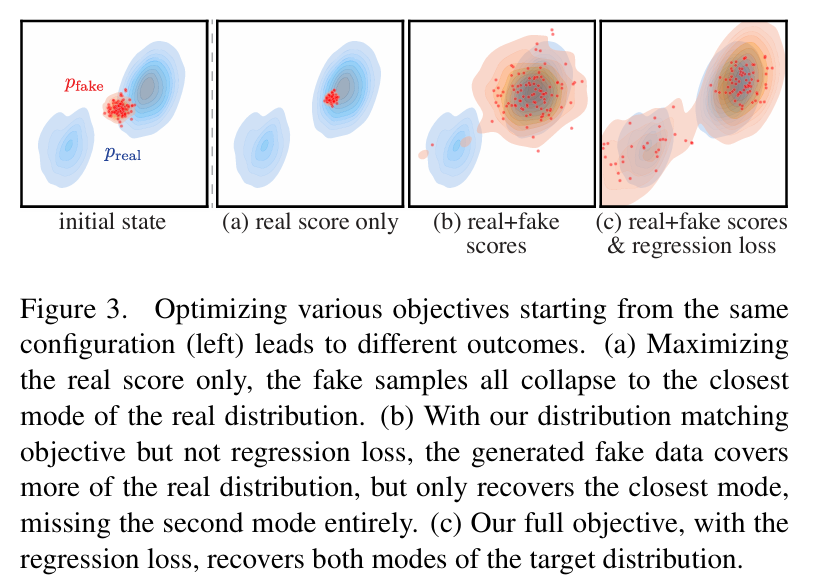 |
|---|
| 图3. 从相同配置开始优化各种目标（左）会导致不同的结果。（a）仅最大化真实分数，假样本全部坍缩到真实分布的最近模式。（b）使用我们的分布匹配目标但不使用回归损失，生成的假数据覆盖了更多的真实分布，但只恢复了最近的模式，完全错过了第二个模式。（c）我们的完整目标，加上回归损失，恢复了目标分布的两个模式。 |
通过用不同标准差的随机高斯噪声扰动数据分布，我们创建了一族在环境空间中完全支撑的“模糊”分布，从而保证分布重叠，使式(2)中的梯度定义良好（图4）。
Score-SDE表明，训练后的扩散模型可近似扩散分布的分数函数。
| 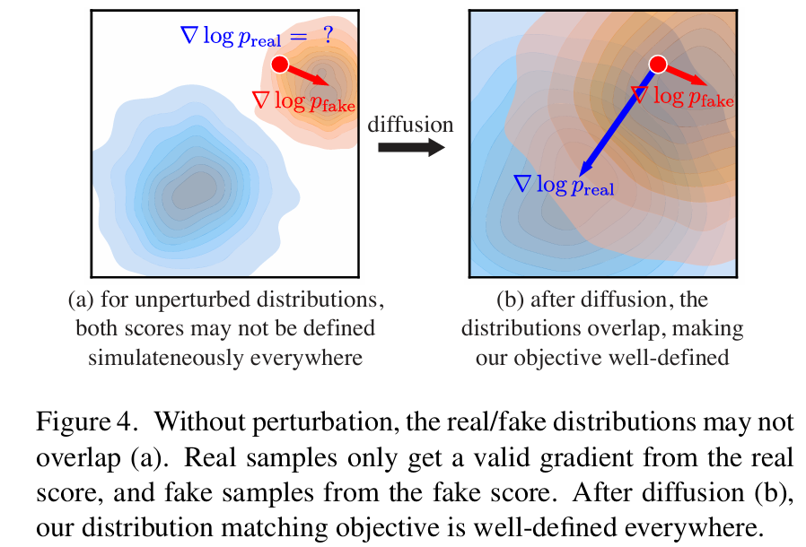 |
|---|
| 图4. 没有扰动时，真实/假分布可能不重叠（a）。真实样本仅从真实分数获得有效梯度，假样本从假分数获得有效梯度。扩散后（b），我们的分布匹配目标在任何地方都定义良好。 |
因此，我们的策略是使用一对扩散去噪器来建模真实分布和虚假分布在高斯扩散后的分数函数，记为$s_{real}(x_t, t)$和$s_{fake}(x_t, t)$。扩散样本$x_t \sim q(x_t | x)$通过在生成器输出$x = G_\theta(z)$中加入时间步$t$的噪声获得：
其中$\alpha_t$和$\sigma_t$来自扩散噪声调度。
- 真实分数：真实分布固定（对应基础扩散模型的训练图像），因此我们使用预训练扩散模型$\mu_{base}(x, t)$的固定副本建模其分数。根据Song等人[74]，扩散模型的分数为：
- 动态学习的虚假分数：虚假分数函数的推导与真实分数类似： 但由于生成样本的分布在训练中动态变化，我们动态调整虚假扩散模型$\mu_{fake}^\phi$以跟踪这些变化。我们从预训练扩散模型$\mu_{base}$初始化虚假扩散模型，并在训练中通过最小化标准去噪目标更新参数$\phi$ [21, 77]： 其中$\mathcal{L}_{denoise}^\phi$根据扩散时间步$t$加权，权重策略与基础扩散模型训练时相同[31, 63]。
分布匹配梯度更新：通过将式(2)中的精确分数替换为两个扩散模型在扰动样本$x_t$上定义的分数，并对扩散时间步取期望，得到最终的近似分布匹配梯度：
其中$z \sim \mathcal{N}(0; I)$，$x = G_\theta(z)$，$t \sim \mathcal{U}(T_{min}, T_{max})$，$x_t \sim q_t(x_t | x)$。推导见附录F。此处$w_t$是依赖时间的标量权重，用于改善训练动态。我们设计权重因子以标准化不同噪声水平下的梯度幅度：具体而言，计算去噪图像与输入在空间和通道维度上的平均绝对误差，设置
其中$S$为空间位置数，$C$为通道数。在4.2节中，我们证明该权重优于先前设计[58, 80]。遵循DreamFusion[58]，我们设$T_{min} = 0.02T$，$T_{max} = 0.98T$。
3.3 回归损失与最终目标
前一节引入的分布匹配目标在$t \gg 0$（即生成样本被大量噪声破坏）时定义良好。但对于少量噪声，$s_{real}(x_t, t)$通常不可靠，因为$p_{real}(x_t, t)$趋近于零。此外，由于分数$\nabla_x \log(p)$对概率密度函数$p$的缩放不变，优化容易出现模式崩溃/丢失——即虚假分布将更高的整体密度分配给模式的子集。为避免这一点，我们使用额外的回归损失确保所有模式被保留，如图3(b, c)所示。
该损失衡量生成器与基础扩散模型在相同输入噪声下的输出逐点距离。具体而言，我们构建配对数据集$\mathcal{D} = \{z, y\}$，其中包含随机高斯噪声图像$z$和对应的输出$y$，$y$通过预训练扩散模型$\mu_{base}$使用确定性ODE求解器[31, 41, 72]采样获得。在CIFAR-10和ImageNet实验中，我们使用EDM[31]的Heun求解器，CIFAR-10用18步，ImageNet用256步；LAION实验使用PNDM[41]求解器，50步采样。我们发现，即使是少量噪声-图像对（例如CIFAR-10中使用少于1%的训练计算量生成）也能作为有效的正则化器。回归损失定义为：
遵循InstaFlow[43]和一致性模型[75]，我们使用学习感知图像块相似度（LPIPS）[89]作为距离函数$\ell$。
最终目标：网络$\mu_{fake}^\phi$通过$\mathcal{L}_{denoise}^\phi$训练，用于辅助计算$\nabla_\theta D_{KL}$。训练$G_\theta$的最终目标为$D_{KL} + \lambda_{reg} \mathcal{L}_{reg}$，默认$\lambda_{reg} = 0.25$。式(7)计算$\nabla_\theta D_{KL}$，$\nabla_\theta \mathcal{L}_{reg}$通过式(9)自动微分计算。我们将两种损失应用于不同数据流：分布匹配梯度使用未配对的虚假样本，回归损失使用3.3节描述的配对样本。算法1概述了最终训练流程，附录B提供了更多细节。
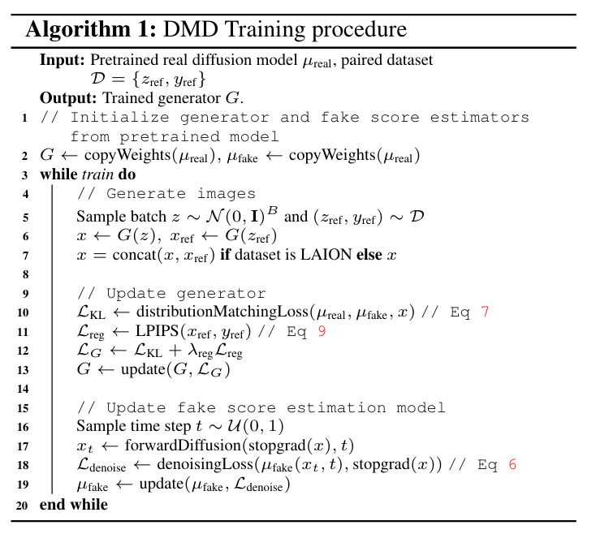
3.4 含分类器自由引导的蒸馏
分类器自由引导[20]广泛用于提升文本到图像扩散模型的图像质量，我们的方法也适用于使用分类器自由引导的扩散模型。首先，通过从引导模型采样生成对应的噪声-输出对，构建回归损失$\mathcal{L}_{reg}$所需的配对数据集。计算分布匹配梯度$\nabla_\theta D_{KL}$时，将真实分数替换为引导模型的均值预测导出的分数，而虚假分数的公式保持不变。我们使用固定引导尺度训练单步生成器。
4. 实验
4.1 类条件图像生成
我们在类条件ImageNet-64×64上训练模型，并与竞争方法进行基准测试。结果如表1所示。我们的模型超越了BigGAN-deep[4]等成熟GAN，以及一致性模型[75]和TRACT[3]等最新扩散蒸馏方法。该方法显著缩小了与原始扩散模型的保真度差距，实现了接近的FID分数（差距在0.3以内），同时速度提升了512倍。在CIFAR-10上，类条件模型达到了具有竞争力的2.66 FID，具体结果见附录。
| 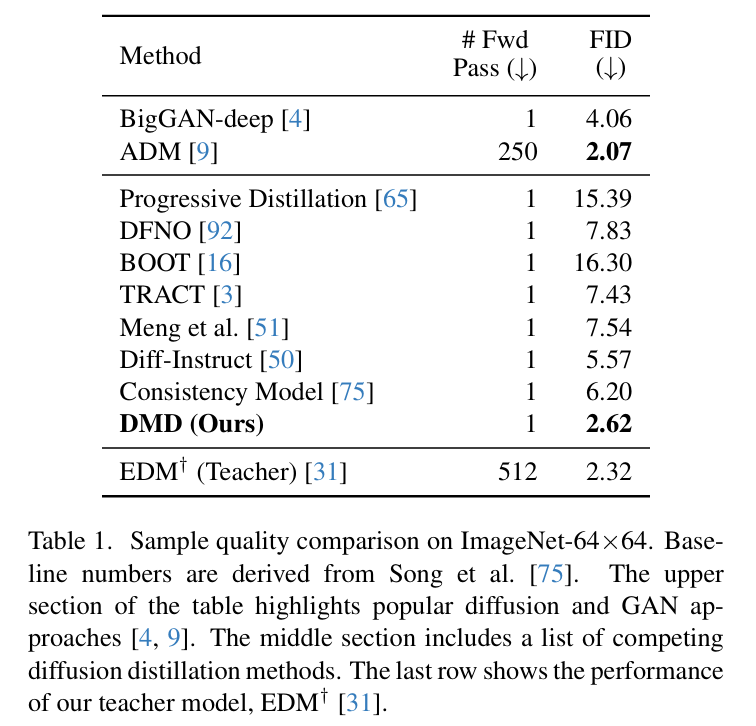 |
|---|
| 表1. ImageNet-64×64上的样本质量比较。基线数值源自Song等人[75]。表格上部突出显示了流行的扩散和GAN方法[4,9]。中间部分列出了 competing diffusion distillation methods。最后一行显示了我们的教师模型$EDM ^{\dagger}$[31]的性能。 |
4.2 消融研究
我们首先将方法与两个基线进行比较：一个省略分布匹配目标，另一个缺少回归损失。表2（左）总结了结果。当缺少分布匹配损失时，基线模型生成的图像缺乏真实感和结构完整性，如图5顶部所示；而省略回归损失会导致训练不稳定和模式崩溃，生成图像的多样性降低，如图5底部所示。
| 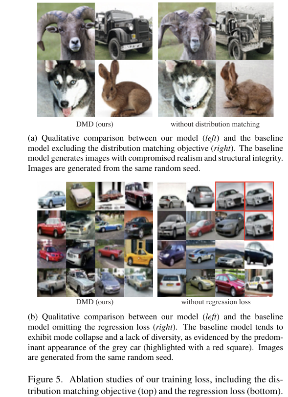 |
|---|
| 图5. 我们训练损失的消融研究，包括分布匹配目标（上）和回归损失（下）。（a）我们的模型（左）与排除分布匹配目标的基线模型（右）之间的定性比较。基线模型生成的图像真实感和结构完整性受损。图像从相同的随机种子生成。（b）我们的模型（左）与省略回归损失的基线模型（右）之间的定性比较。基线模型倾向于表现出模式坍缩和缺乏多样性，如灰色汽车的主要出现（用红色方块突出显示）所证明。图像从相同的随机种子生成。 |
表2（右）展示了我们提出的样本加权策略（3.2节）的优势。与DreamFusion[58]和ProlificDreamer[80]使用的两种流行加权方案$\sigma_t/\alpha_t$和$\sigma_t^3/\alpha_t$相比，我们的策略通过标准化不同噪声水平的梯度幅度并稳定优化过程，实现了0.9的FID提升。
| 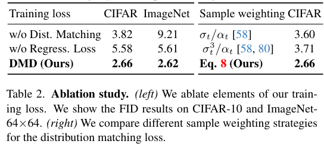 |
|---|
| 表2. 消融研究。（左）我们对训练损失的元素进行消融。我们展示了CIFAR-10和ImageNet64×64上的FID结果。（右）我们比较了分布匹配损失的不同样本加权策略。 |
4.3 文本到图像生成
我们使用零-shot MS COCO评估模型在文本到图像生成任务上的性能。通过在LAION-Aesthetics-6.25+[69]上蒸馏Stable Diffusion v1.5[63]来训练文本到图像模型，采用引导尺度3（该尺度下基础Stable Diffusion模型的FID最佳）。训练在72个A100 GPU的集群上耗时约36小时。表3将我们的模型与最先进的方法进行比较，结果显示：我们的方法性能优于StyleGAN-T[67]，超越所有其他扩散加速方法，包括高级扩散求解器[46,91]和扩散蒸馏技术（如潜在一致性模型[48,49]、UFOGen[84]和InstaFlow[43]）。该方法大幅缩小了蒸馏模型与基础模型的差距，FID仅比Stable Diffusion v1.5高2.7，同时速度提升约30倍。利用FP16推理时，模型以20帧/秒的速度生成图像，支持交互式应用。
| 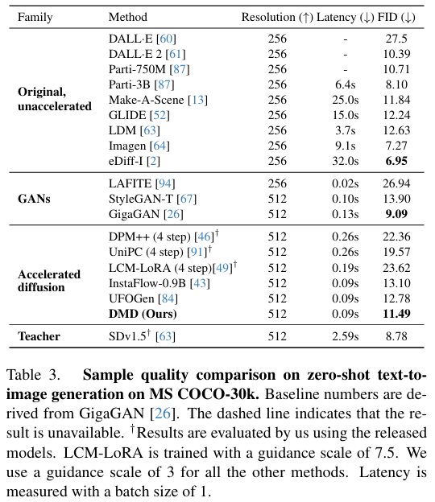 |
|---|
| 表3. MS COCO-30k上零样本文本到图像生成的样本质量比较。基线数值源自GigaGAN[26]。虚线表示结果不可用。†结果由我们使用发布的模型评估得出。LCM-LoRA使用7.5的引导尺度训练。我们对所有其他方法使用3的引导尺度。延迟使用批量大小1测量。 |
高引导尺度扩散蒸馏：对于文本到图像生成，扩散模型通常使用高引导尺度提升图像质量[57,63]。为评估该场景下的蒸馏方法，我们额外训练了一个文本到图像模型——在LAION-Aesthetics-6+数据集[69]上以引导尺度8蒸馏SD v1.5。表4将该方法与多种扩散加速方法[46,49,91]进行基准测试。与低引导模型类似，单步生成器显著优于竞争方法，即使后者采用四步采样。与竞争方法和基础扩散模型的定性比较见图6。
| 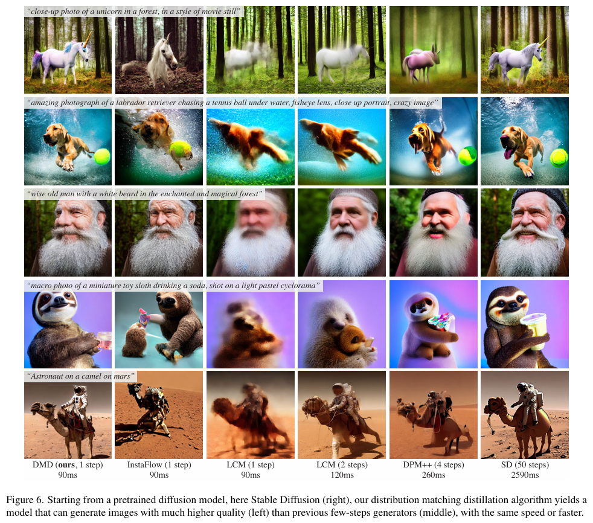 |
|---|
| 图6. 从预训练扩散模型开始，这里是稳定扩散（右），我们的分布匹配蒸馏算法产生的模型可以生成质量比以前的少步生成器（中间）高得多的图像（左），速度相同或更快。 |
| 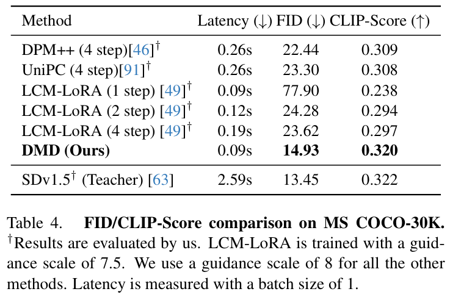 |
|---|
| 表4. MS COCO-30K上的FID/CLIP分数比较。†结果由我们评估得出。LCM-LoRA使用7.5的引导尺度训练。我们对所有其他方法使用8的引导尺度。延迟使用批量大小1测量。 |
5. 局限性
尽管我们的研究成果颇具前景，但单步模型与扩散采样路径的更精细离散化（如使用100或1000次神经网络评估）之间仍存在细微的质量差异。此外，我们的框架需要对虚假分数函数和生成器的权重进行微调，这导致训练过程中内存占用较高。诸如LoRA等技术为解决这一问题提供了潜在方案。
A. 定性速度比较
在随附的视频材料中，我们展示了单步生成器与原始Stable Diffusion模型的定性速度对比。我们的单步生成器在实现与Stable Diffusion模型相当图像质量的同时，速度提升了约30倍。
B. 实现细节
B.1 CIFAR-10
我们从EDM[31]预训练模型中蒸馏单步生成器，具体使用“edm-cifar10-32x32-cond-vp”进行类条件训练，使用“edm-cifar10-32x32-uncond-vp”进行无条件训练。我们设置$\sigma_{min}=0.002$和$\sigma_{max}=80$，并将噪声调度离散化为1000个区间2。为构建蒸馏数据集，我们使用确定性Heun采样器（$S_{churn}=0$）在18步内生成100,000对噪声-图像对（类条件训练）和500,000对（无条件训练）[31]。
训练阶段使用AdamW优化器[44]，设置学习率为5e-5，权重衰减0.01，beta参数为(0.9, 0.999)，并采用500步学习率预热。模型在7块GPU上训练，总批量大小为392。同时从蒸馏数据集中采样等量噪声-图像对计算回归损失。遵循Song等人[75]，使用PIQ库[32]中基于VGG骨干的LPIPS损失。输入LPIPS网络前，通过双线性上采样将图像分辨率提升至224×224。类条件训练中回归损失权重为0.25（$\lambda_{reg}=0.25$），无条件训练中为0.5（$\lambda_{reg}=0.5$），分布匹配损失和虚假分数去噪损失的权重均为1。模型训练300,000次迭代，并采用L2范数为10的梯度裁剪。所有网络禁用 dropout，遵循一致性模型[75]的设置。
B.2 ImageNet-64×64
我们从EDM[31]预训练模型“edm-imagenet-64x64-cond-adm”中蒸馏单步生成器，用于类条件训练。同样设置$\sigma_{min}=0.002$、$\sigma_{max}=80$，并将噪声调度离散化为1000个区间。首先使用确定性Heun采样器（$S_{churn}=0$）在256步内生成25,000对噪声-图像对，构建蒸馏数据集[31]。
训练采用AdamW优化器[44]，学习率2e-6，权重衰减0.01，beta参数(0.9, 0.999)，学习率预热500步。7块GPU上的总批量大小为336，同步采样蒸馏数据集的噪声-图像对计算回归损失。LPIPS损失的使用方式与CIFAR-10一致，图像上采样至224×224后输入网络。回归损失权重为0.25（$\lambda_{reg}=0.25$），分布匹配损失和虚假分数去噪损失权重为1。模型训练350,000次迭代，采用混合精度训练和L2范数10的梯度裁剪，所有网络禁用dropout[75]。
B.3 LAION-Aesthetic 6.25+
我们从Stable Diffusion v1.5[63]蒸馏单步生成器，使用包含约300万图像的LAION-Aesthetic 6.25+[69]数据集。通过确定性PNMS采样器[41]在50步内、引导尺度3下生成500,000对噪声-图像对，构建蒸馏数据集，每对对应LAION-Aesthetic 6.25+的前500,000个提示词。
训练使用AdamW优化器[44]，学习率1e-5，权重衰减0.01，beta参数(0.9, 0.999)，学习率预热500步。72块GPU的总批量大小为2304，同时采样蒸馏数据集的噪声-图像对计算回归损失，批量大小为1152。由于使用VAE将生成的潜在表示解码为图像以计算回归损失时内存消耗较大，我们选择较小的VAE网络[53]进行解码。LPIPS损失的配置与前文一致。回归损失权重0.25（$\lambda_{reg}=0.25$），分布匹配损失和虚假分数去噪损失权重为1。模型训练20,000次迭代，为优化GPU内存，采用梯度检查点[7]和混合精度训练，并应用L2范数10的梯度裁剪。
B.4 LAION-Aesthetic 6+
我们从Stable Diffusion v1.5[63]蒸馏单步生成器，使用包含约1200万图像的LAION-Aesthetic 6+[69]数据集。通过确定性PNMS采样器[41]在50步内、引导尺度8下生成12,000,000对噪声-图像对，每对对应LAION-Aesthetic 6+的提示词。
训练采用AdamW优化器[44]，学习率1e-5，权重衰减0.01，beta参数(0.9, 0.999)，学习率预热500步。为优化GPU内存，使用梯度检查点[7]和混合精度训练，梯度裁剪L2范数为10。训练在约80块A100 GPU上持续两周，期间调整了蒸馏数据集大小、回归损失权重、VAE解码器类型和分布匹配损失计算的最大时间步。完整训练日志见表5。需注意，受时间和计算资源限制，此训练计划可能并非最高效或最优。
| 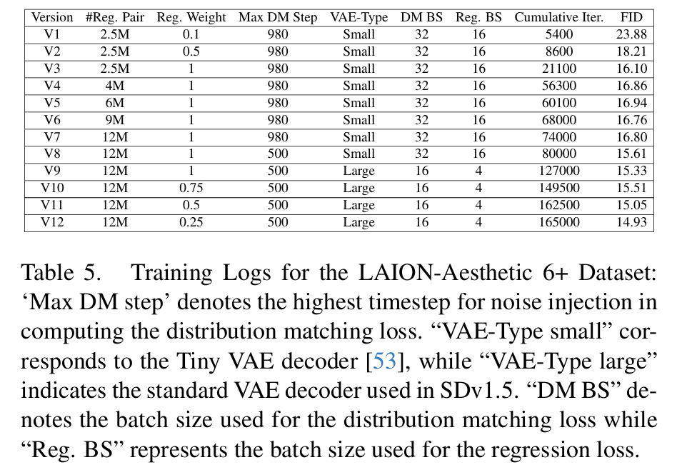 |
|---|
| 表5. LAION-Aesthetic 6+数据集的训练日志：“VAE-Type small”表示SDv1.5中使用的标准VAE解码器。“VAE-Type large”对应Tiny VAE解码器[53]。“Max DM step”表示分布匹配损失计算中噪声注入的最高时间步。“DM BS”表示计算分布匹配损失时使用的批量大小，而“Reg. BS”表示回归损失使用的批量大小。 |
C. 基线细节
C.1. 无分布匹配基线
该基线遵循B.1和B.2节中概述的训练设置，但省略了分布匹配损失。
C.2. 无回归损失基线
该基线遵循B.1和B.2节中的训练协议，但排除了回归损失。为防止训练发散，学习率调整为1e-5。
C.3. 文本到图像基线
我们将我们的方法与各种模型进行基准测试，包括基础扩散模型[63]、快速扩散求解器[46,91]和少步扩散蒸馏基线[48,49]。
- 稳定扩散：我们采用huggingface上可用的StableDiffusion v1.5模型，使用PNMS采样器[41]在50步内生成图像。
- 快速扩散求解器：我们使用diffusers库[78]中的UniPC[91]和DPM-Solver++[46]实现，所有超参数设置为默认值。
- LCM-LoRA：我们使用Hugging Face上托管的LCM-LoRA SDv1.5检查点。由于该模型是用引导预训练的，因此在推理过程中我们不应用无分类器引导。
D. 评估细节
对于COCO的零样本评估，我们采用GigaGAN[26]的评估代码。具体来说，我们使用MSCOCO2014验证集中的随机提示生成30,000张图像。通过PIL.Lanczos调整大小算法将生成的图像从512×512下采样到256×256。然后将这些图像与同一验证集中的40,504张真实图像进行比较，使用clean-fid[56]库计算FID指标。此外，我们采用OpenCLIP-G主干来计算CLIP分数。对于ImageNet和CIFAR-10，我们分别生成50,000张图像，并使用EDM的评估代码[31]计算它们的FID。
E. CIFAR-10实验
遵循B.1节中概述的设置，我们在CIFAR-10上训练模型，并与其他竞争方法进行比较。表6总结了结果。
| 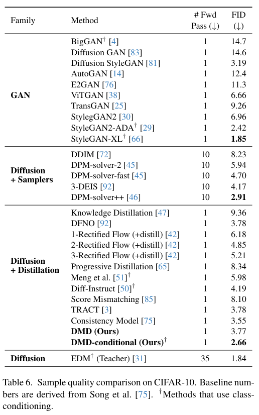 |
|---|
| 表6. CIFAR-10上的样本质量比较。基线数值源自Song等人[75]。†使用类别条件的方法。 |
F. 分布匹配梯度的推导
我们对公式（7）的推导如下：
G. 图1的提示词
| 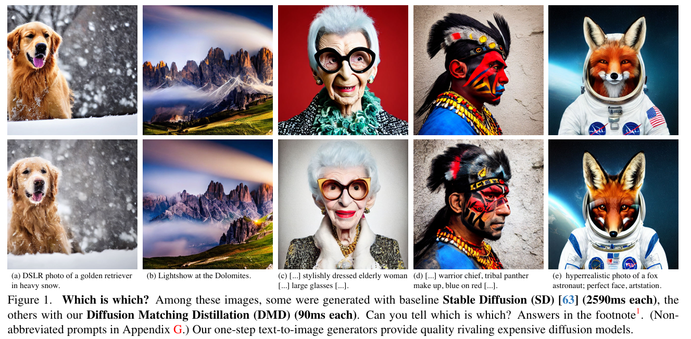 |
|---|
| 图1. 哪个是哪个？在这些图像中，有些是用基线稳定扩散（SD）生成的（每张2590毫秒），另一些是用我们的扩散匹配蒸馏（DMD）生成的（每张90毫秒）。你能分辨出哪些是哪些吗？答案在脚注1中。（完整提示词见附录G。）我们的一步文本到图像生成器提供了可与昂贵的扩散模型相媲美的质量。 |
图1从左到右使用的提示词如下：
- 一张在大雪中金毛寻回犬的单反照片。
- 多洛米蒂山脉的灯光秀。
- 一位穿着时尚的老年女性的专业肖像，佩戴着非常大的眼镜，风格类似艾瑞斯·阿普菲尔（Iris Apfel），五官细节高度精致。
- 战士首领的中景侧面肖像照片，面部轮廓分明，带有红蓝相间的部落黑豹妆容，目光移向别处，眼神严肃但清澈，50毫米人像镜头，摄影，硬边缘光照明摄影。
- 一张狐狸宇航员的超写实照片；完美面容，ArtStation风格。
H. 噪声预测与数据预测的等价性
噪声预测模型$\epsilon(x_t, t)$和数据预测模型$\mu(x_t, t)$可根据以下规则相互转换[31]：
I. 回归损失的进一步分析
DMD利用回归损失来稳定训练并缓解模式崩溃（第3.3节）。在本文中，我们主要采用LPIPS[89]距离函数，因为它在先前研究中已被广泛使用。为进一步分析，我们在CIFAR-10数据集上尝试使用标准L2距离来训练蒸馏模型。结果显示，使用L2损失训练的模型达到了2.78的FID分数，而使用LPIPS时为2.66，这表明我们的方法对不同损失函数具有鲁棒性。